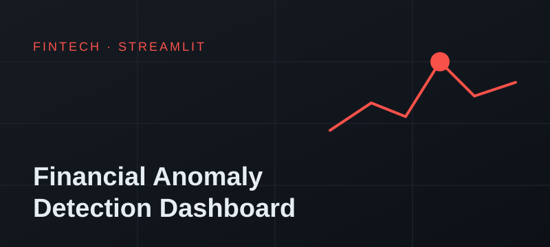
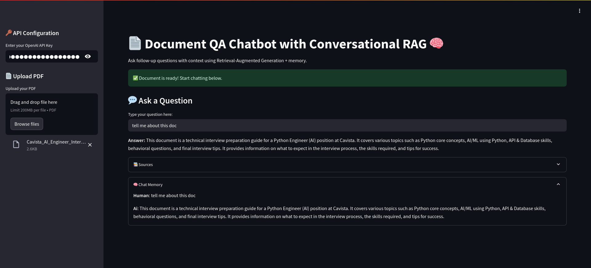
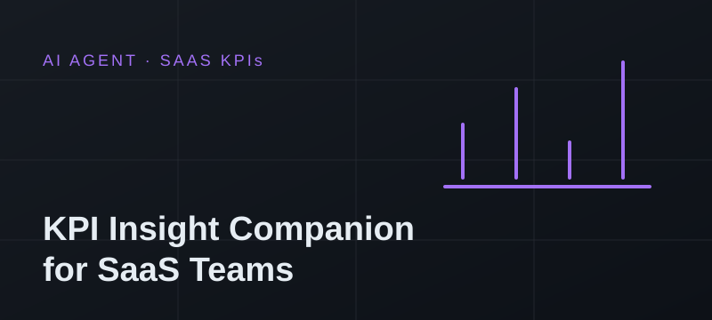
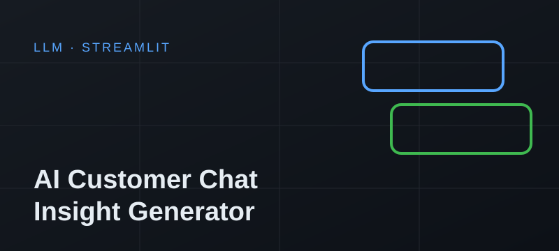
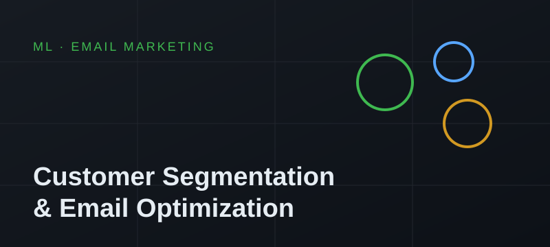
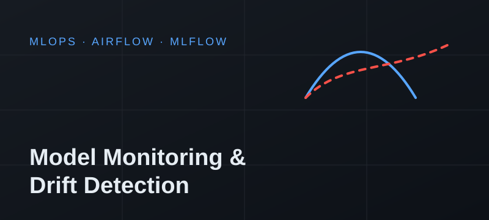
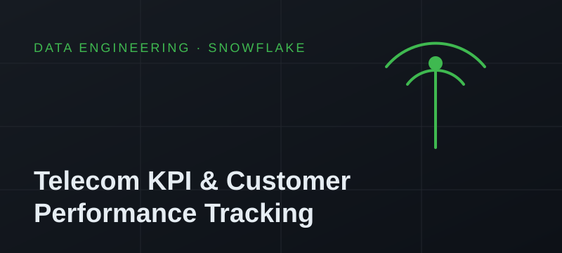
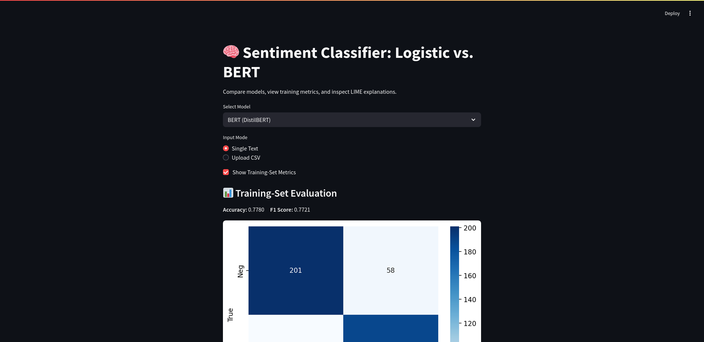

Problem: Payment and bill-pay platforms lose money to transactions that fail but still debit the customer's wallet, duplicate charges and amount mismatches, and these often go unnoticed until customers complain.
Solution: A Streamlit dashboard with a rule-based engine that flags failed-but-debited, amount-mismatch, duplicate, suspicious-refund and high-value transactions. Each flag gets a severity level, and the dashboard shows revenue at risk, leakage %, success rate and anomaly trends over time, filterable by service (power, airtime, TV).
View on GitHub
Problem: Teams waste time searching long PDFs (policies, contracts, manuals) for answers.
Solution: Upload a PDF and ask questions in plain English. The bot retrieves the relevant passages with FAISS vector search and answers using only the document's content.
View on GitHub Live Demo
Problem: Marketing teams wait on analysts to explain why a metric moved.
Solution: An AI agent that answers plain-English questions like "Why did CAC spike last month?" with a chart and a written explanation in seconds.
View on GitHub Live DemoProblem: SaaS teams collect support tickets, NPS surveys and feature requests but don't have time to read them all, so churn signals get missed.
Solution: An LLM pipeline that extracts sentiment, themes and recommended actions from customer feedback and shows them on a dashboard.
View on GitHub Live Demo
Problem: Raw customer chat logs are too long to review by hand.
Solution: Upload a CSV of chats and get back clean summaries, sentiment tags and action items generated by GPT.
View on GitHub Live Demo
Problem: Sending the same email to every customer wastes budget and lowers conversion.
Solution: A dashboard that segments customers by behaviour and predicts how likely each one is to convert, so campaigns can target the right segment.
View on GitHub Live Demo
Problem: Production ML models quietly lose accuracy as the incoming data changes.
Solution: An end-to-end pipeline that tracks models with MLflow, detects data drift with Evidently AI, schedules checks with Airflow and deploys via GitHub Actions to AWS.
View on GitHub
Problem: Network and customer KPIs were tracked by hand, so churn and performance problems showed up late.
Solution: Automated data ingestion into Snowflake, churn-prediction model training with MLflow, and KPI dashboards, orchestrated with Airflow and running on AWS EC2.
View on GitHub
Problem: Businesses need reliable sentiment scores for tweets and product reviews.
Solution: Compared a fast, explainable Logistic Regression baseline with a fine-tuned BERT transformer, packaged for analysis and deployment.
View on GitHub